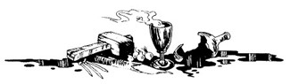
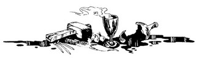

190
Vous frappez à la porte avec force, et regardez par la fenêtre. Les deux hommes reviennent bientôt, et allument les bougies. Le vieil homme se dirige vers la porte (rendez-vous au 207 ).
Vous frappez à la porte avec force, et regardez par la fenêtre. Les deux hommes reviennent bientôt, et allument les bougies. Le vieil homme se dirige vers la porte (rendez-vous au 207 ).
